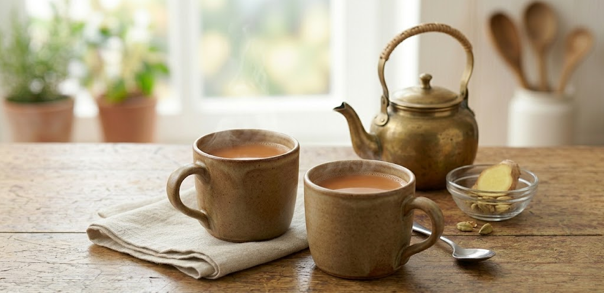

A comforting staple across millions of households, a warm cup of spiced milk tea (Chai) is the ultimate soul-soothing beverage. This simple recipe balances the bold, robust flavor of black tea leaves with the creamy richness of milk and a subtle hint of warming spices. It is the perfect, aromatic companion to a plate of crisp samosas.
In a small saucepan, bring the water, sugar, and your choice of ginger or cardamom to a rolling boil over medium-high heat.
Add the black tea leaves. Lower the heat and let it simmer for 1 to 2 minutes until the water turns a deep, dark amber.
Pour in the milk and bring the mixture back up to a boil.
As soon as the tea begins to rise and bubble up, lower the heat and let it simmer gently for another minute to deepen the flavor.
Turn off the stove. Strain the hot tea through a fine mesh sieve directly into your favorite mugs and enjoy!